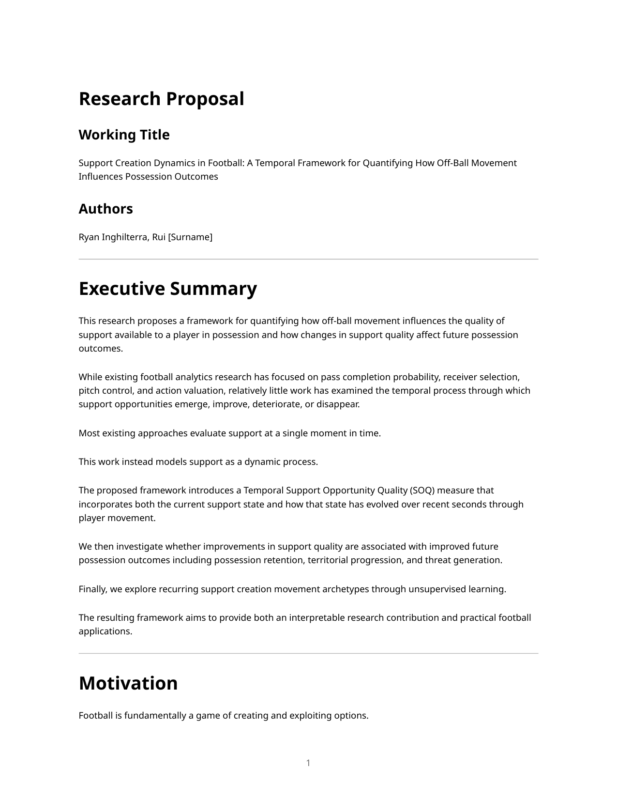

Support Creation Dynamics in Football
Active research proposal and collaboration started in February 2026. This page describes the research direction and methodology; it is not presented as a completed or published paper.

From “who is open?” to “how did the option get created?”
This project proposes a temporal framework for quantifying how off-ball movement changes the support environment available to the player in possession. The goal is to measure support as a dynamic process rather than a single frame snapshot.
Research Question
Most football analytics work evaluates available options at a moment in time: pass completion probability, receiver selection, pitch control, or action value. This project asks a different question:
How did teammate movement create, improve, weaken, or remove support opportunities before the possession outcome happened?
The working hypothesis is that possessions with positive support creation dynamics should be more likely to retain the ball, progress territorially, and increase attacking threat than possessions where the support environment remains static or deteriorates.
Proposed Framework
The core metric is Temporal Support Opportunity Quality (SOQ). SOQ combines the current support state with how that state evolved over the previous seconds.
Instantaneous State
- Number of available options
- Support distance and angle
- Passing lane openness
- Defender obstruction
- Pressure and local space
Temporal Evolution
- Options created or lost
- Passing lanes opened or closed
- Space gained through movement
- Defender displacement
- Support stability and volatility
Possession Outcomes
- Retention after short horizons
- Progressive passes or carries
- Final-third entries
- Future xT, EPV, or related value change
Data and Method
The proposed primary dataset is PFF FC 2022 FIFA World Cup tracking and event data, with SkillCorner open data as a possible prototyping or external validation source. The method is designed to stay interpretable:
- Identify possession sequences with the ball in play and a meaningful possession structure.
- Build frame-level support features for availability, lane quality, pressure, space, and team structure.
- Add temporal features that measure how those conditions changed over recent seconds.
- Calibrate SOQ components with interpretable supervised models such as logistic regression, Elastic Net, or GAMs.
- Validate support creation dynamics against retention, progression, and threat outcomes.
Validation Plan
The validation work is the important part. A useful support metric should explain more than the obvious context already captured by pitch location, pressure on the ball carrier, or number of nearby teammates.
Planned comparisons include:
- Retention after 3, 5, and 10 seconds.
- Territorial progression through passes, carries, and entries into advanced areas.
- Future threat generation using xT, EPV, or related possession value metrics.
- Baselines using ball-carrier pressure, pitch location, nearby teammates, and static support measures.
Exploratory Archetypes
A secondary strand of the project looks for recurring support creation patterns through unsupervised learning. Candidate archetypes include check-to-ball support, lateral escape support, progressive support runs, width creation, and third-man support movements.
The intent is descriptive and practical: give analysts a way to review not only whether support existed, but what kind of movement created it.
Why It Matters
For a club environment, this type of work can connect tracking data to questions coaches and analysts already ask:
- Which players consistently create useful options for teammates?
- When does movement create a better decision window for the ball carrier?
- Which possession structures retain the ball under pressure?
- How can analysts review support quality in a way that is both quantitative and visually checkable?
The project fits my broader football analytics focus: building reproducible, interpretable models that turn event and tracking data into decision-support tools.